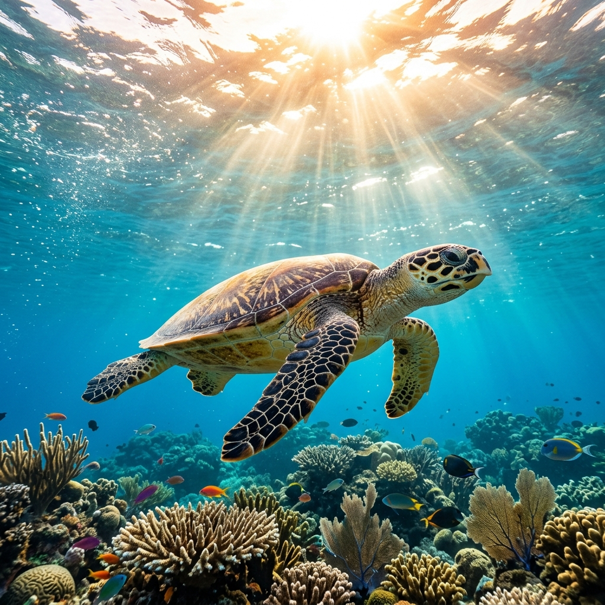

Operação Sentinelas das Tartarugas Marinhas

Entre os meses de setembro e março, as tartarugas-verdes, de-pente e cabeçudas retornam às nossas praias para desova. Nossas equipes de biólogos e voluntários atuam 24 horas por dia cercando ninhos em áreas de risco e protegendo os filhotes contra iluminação artificial e predadores urbanos.
No último mês, nosso Centro de Triagem Marinha devolveu ao mar 14 tartarugas que passaram por cirurgia para retirada de anzóis e fragmentos de microplásticos do trato digestivo.
Espécies prioritárias protegidas: Tartaruga-de-Couro, Baleia-Franca, Golfinho-Tucuxi e Pinguim-de-Magalhães.